11 способов накрутить жалобы в Инстаграме*

Накрутка жалоб в Инстаграме* необходима для устранения конкурентов или мошенников, которые обманывают людей, удаление контента, на который не обращает внимания администрация. Подобная услуга доступна через онлайн сервисы, боты в Telegram или в чатах активности.
Причины для жалоб в Инстаграме*
В социальной сети есть перечень недопустимых действий, которые приводят в блокировке аккаунте или временным ограничениям, есть так же несколько способов узнать, заблокировали вас другие пользователи или нет.
В перечень наиболее популярных входят:
- оскорбление другого пользователя;
- использование чужой интеллектуальной собственности. Например, фото и видео человека, который не давал согласия на размещение вне своего профиля;
- оскорбление верующих, по национальному признаку или расовому;
- негативные высказывания о людях с нетрадиционной ориентацией;
- спам и мошенничество;
- реклама запрещенных веществ, лекарственных препаратов;
- эксплуатация детей;
- рабство и высказывания о его поддержке;
- эротический контент;
- насилие и издевательства.
Курение и распитие алкогольной продукции запрещены на трансляциях, а также в качестве рекламы в социальной сети. Заметив одно из этих нарушений, можно пожаловаться на чужой профиль или отдельную публикацию. Перед пользователем появятся также пункты: «Заблокировать навсегда, а также страницы которые может создать этот человек».
Как быстро рассматривают жалобы
В зависимости от нарушений, на рассмотрение уходит от 24-х часов до недели. Быстро выносят решение по ситуациям, где размещен эротический контент, насилие, присутствуют дети. Дольше, если на видео или фото чужие материалы, запрещенные вещества.
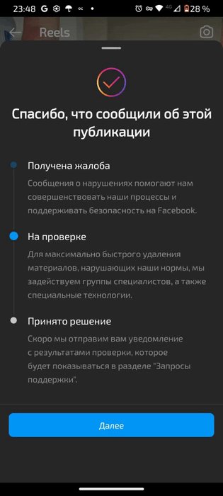
Условия для ускоренного рассмотрения жалоб:- свыше 300 заявок с указанием одной и той же причины;
- факт нарушения неопровержим;
- владелец аккаунта ранее допускал такие же ошибки.
Кстати, одна из причин блокировки контента – использование музыкальных композиций, на которые не давал разрешение правообладатель. Поэтому, при загрузке видео, лучше добавлять треки, которые уже есть в каталоге Инстаграма*.
11 сервисов для накрутки жалоб
Накрутка жалоб на Инстаграм* аккаунт возможна через сервисы и ботов в Телеграм. Таким способом убирают конкурентов или мошенников, которые обманывают людей: социальная сеть почти не продвигает посты из тех профилей, на которые раннее были отправлены жалобы. И конкуренту придется создавать новую страницу или пытаться выйти из теневого бана на старом.
№1 @top1_nakrutki_bot
Самый быстрый и дешевый вариант накрутить жалобы на аккаунт или пост в Инстаграм* - использовать Телеграм бота - @top1_nakrutki_bot. Этот способ эффективен и помогает блокировать аккаунты и убирать публикации путем накрутки жалоб на них, а так как ТГ бот всегда под рукой в мессенджере, то следить за процессом крайне удобно, использую его всегда при накрутке жалоб или других каких то активностей в Инстаграм*. Простая инструкция по использованию этого бота:
- Открываем его и жмем старт -> накрутка.
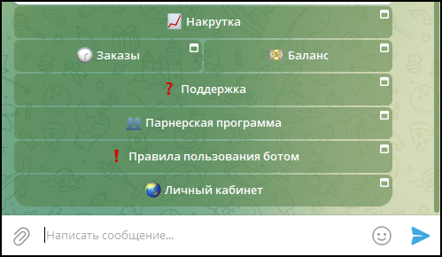
- Выбираем нужную социальную сеть - Инстаграм*.
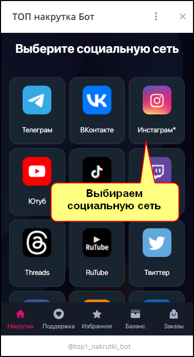
- Выбираем на что будем жаловаться: пост или аккаунт, далее выбираем тариф и определяемся с услугой, жалобы будут идти из России, СНГ или всего мира.
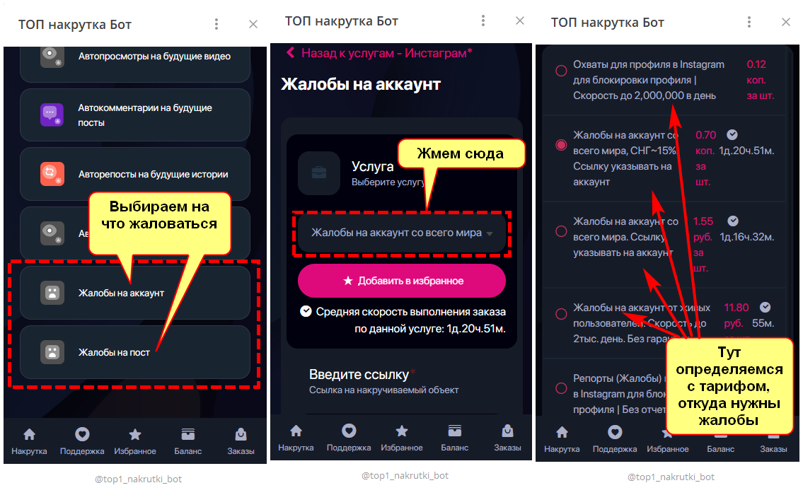
- После того как выбрали - листаем вниз, ставим ссылку на обидчика, вводим нужное количество -> жмем "Создать заказ".
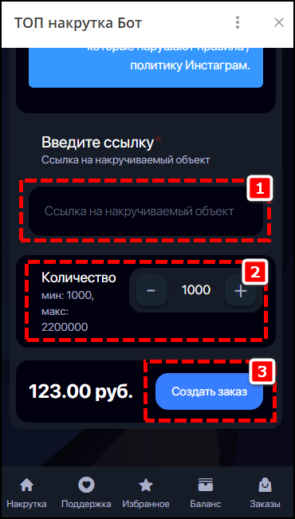
Вот и все, всю статистику можете отслеживать в Боте Телеграм и следить, когда "скамный" пост или мошенника забанит Инстаграм* поддержка. На вопрос: сколько нужно жалоб накрутить чтобы заблокировать Инстаграм* - в Боте есть ответ - минимум 1000 чтобы быстро обратили внимание и приняли меры, рекомендую кидать жалобу только на фейковые аккаунты, которые нарушают правила или обманывают. Так как если отправить на обычного человека, то вариант его блокировки уменьшается. Еще подобный бот для накрутки: @profvishenie_bot
№2 PrMotion.me
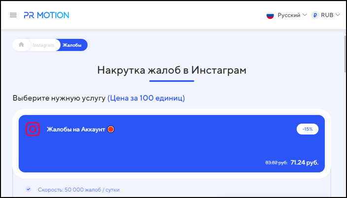
За 1 отзыв о нарушении пользователь заплатит 1.6 рублей. Лучше использовать то минимальное количество, что предлагает сервис, чтобы наверняка заблокировать нужный аккаунт! PrMotion.me предлагает только блокировку аккаунта, поэтому при создании заявки пригодится ссылка на нужный профиль. Можно редактировать количество накрутки, предложена гарантия на выполнение, а срок составляет до 14 дней со стартом в течение 72-х часов.№3 Unu.im
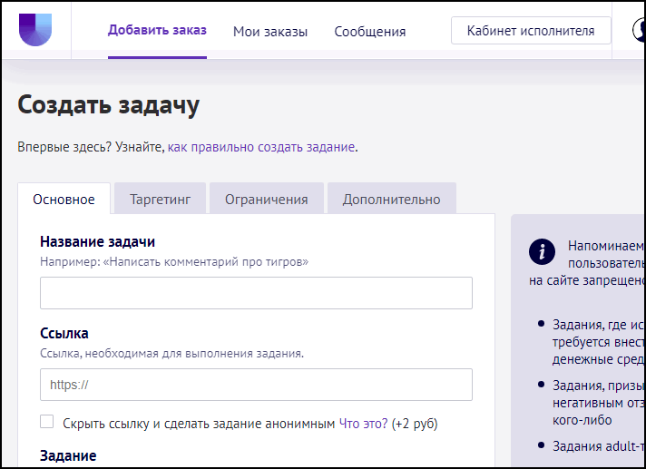
В сервисе можно создать свою задачу через дополнительный раздел: «Другое». Выполнением будут заняты реальные исполнители. Заказчику нужно указать в описании к заказу, что необходимы жалобы и скриншот в качестве подтверждения выполнения. Стоимость – любая, от 1,5 рублей за одного исполнителя.№4 SMOService
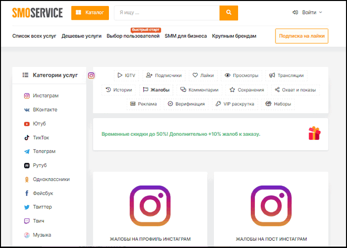
Предлагает два типа услуги: на профиль (10,90 на 1 шт - сильно дороже первых двух сервисов из подборки) и на пост отдельно (7,90 за одну). Жалобы подают реальные пользователи, поэтому эффективность у таких откликов высокая. Высокая скорость, гарантия на то, что все исполнители выполнили задачу.№5 SMMYT
В сервисе доступна накрутка жалоб на публикацию или аккаунт, но является самым дорогим среди всех сервисов. Заказчик не выбирает причину, а просто добавляет ссылку и необходимое количество.
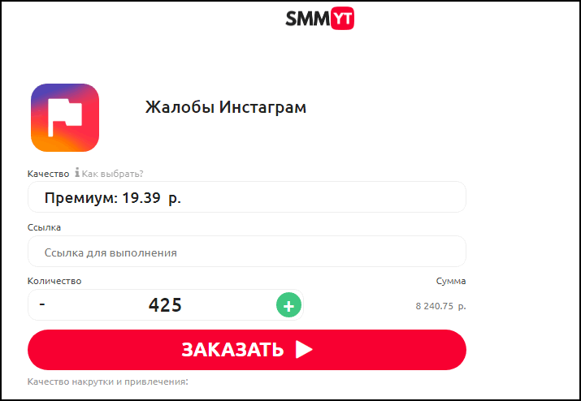
Услуга доступна по нескольким тарифам:- старт: 7,36 рублей за 250 жалоб, боты, стандартная скорость, только на фото и видео;
- стандарт: 10,09 рублей за 325, проверенные боты, средняя скорость, на профиль, фото и видео;
- премиум: 19,39 за 350, офферы и реальные пользователи, с гарантией;
- премиум+: 26,38 за 400, реальные люди, гарантия, повышенная скорость;
- ультима: 58,21 за 350, подробные жалобы от настоящих людей, максимальный процент удаления.
Чтобы оформить заказ необязательно регистрироваться. Нужно создать заявку, заполнить основные данные и добавить способ оплаты.
№6 SMMForm
Три типа услуги:
- на пост;
- на аккаунт;
- на видео (IGTV, Reels).
За первые две цена одинаковая: 24 рубля за одно сообщение о нарушении. За третий – 19,29 с высокой скоростью выполнения и гарантией. Максимальное количество – до 2000 в день.
№7 Smmchik
Предлагает накрутку жалоб на публикации, Истории и аккаунт. Также есть изменение количества, с минимальным числом в 10 штук. Но чтобы запустить, нужно выполнить другие задания и с помощью полученных монет оплатить выполнение заказа. У сервиса нет гарантии на выполнение услуги, но накрутка предложена бесплатно.№8 SMMJump
Вторая версия предыдущего сайта, но уже с оплатой и гарантиями накрутки. Оформить можно через вкладку «Прочее», во всплывающем меню на сайте. Две категории: на пост и на аккаунт. Жалоба на публикацию: от 100 штук за 39 рублей, на аккаунт от ботов – 30 рублей за 100 и от реальных пользователей – за 59.№9 SMMLaba
Оформление услуги также возможно с помощью раздела «Прочее». Цена за накрутку жалоб на пост – 30 рублей, аккаунт – 39. Предлагает накрутку на Истории, Reels и IGTV, через отдельную категорию. Для оформления заказ необязательно регистрироваться.№10 Boosted
Есть три типа услуг: на Истории, публикации и посты. Задание будет выполнено реальными пользователями и с галочкой верификации. Сервис не гарантирует, что контент будет удален, но рекомендует привлекать большее количество исполнителей. За 5 жалоб на любой тип услуги – 765 рублей.№11 Простоспец.рф
На оформление заказа действует скидка, если заказчику нужно свыше 50 жалоб. На первые 50 – 7,90 одна жалоба, на 250 – 7.50 за 1, 500 – 7,11 за 1. Максимальное количество – 1000 отзывов в сутки. То есть, за 100 жалоб пользователь заплатит 790 рублей. Но выполнять задачу будут реальные исполнители, с уникального IP.Отклонили жалобы в Инстаграме*
После того как нарушение пройдет проверку, отправившему придет ответ о статусе заявки. В основном, уведомления приходят, если модерация не увидела неверных действий со стороны другого пользователя. Два способа, как отследить решение технической поддержки:
- самостоятельно обновлять нужную страницу;
- через «Настройки».
Посмотреть статус с помощью параметров аккаунта:
- Зайти в Инстаграм* - нажать сверху по трем полоскам.
- Настройки и конфиденциальность – Помощь.
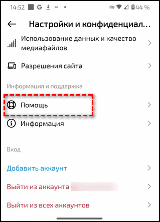
- Запросы технической поддержки – Жалобы.
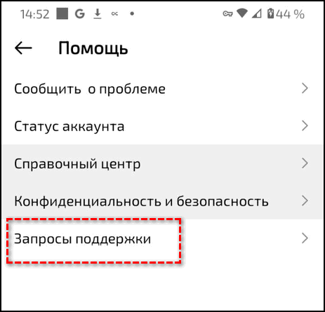
Будут показаны все текущие сообщения о нарушениях. В описании подробно расписано, почему публикация была или не была удалена.